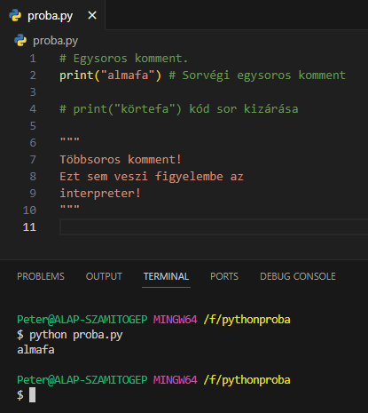

arrow_circle_up
Alapvető dolgok:
- Két fontos szabály!
-
A Python soremelést (enter) használ az utasítások
(statement) lezárására!
Tehát nem pontosvesszőt, mint a legtöbb egyéb nyelv.
-
A Python behúzást (indentation) használ a hatókörök
(scope) kijelölésére!
Behúzásnak a programsorok elején lévő fehér szóközöket
(whitespace) nevezzük. Legalább
egy szóköz hosszúságúnak kell lennie!
-
Látható, hogy a 2-4.sorban behúzással jelöltük a
kiir() függvény hatókörét. Egy
tabulátornyit húztuk beljebb az összes sort.
-
Ha véletlenül kisebb vagy nagyobb behúzást tennénk, azonnal
hibaüzenetet kapnánk, és nem futna le a program (IndentationError)!
- A behúzás hiánya ugyanilyen hibát eredményez!
Kommentek:
-
Pythonban kommentekhez a
# karaktert használjuk.
-
A kommenetek célja:
- Emlékeztetők, figyelmeztetések írása.
- Kódsorok kizárása a fordításból hibakereséshez.
-
Egysoros komment elhelyezhető külön sorban, vagy egy sor
végén. Az interpreter figyelmen kívül hagyja a benne lévő
részt.
-
Többsoros kommentet írhatunk, ha minden sor elejére
kitesszük a # karaktert.
-
Ha egy szövegliterál nincs változóhoz rendelve, akkor az
interpeter figyelmen kívül hagyja, azaz kommentként kezeli.

Források:
w3schools/python
python.org